<!DOCTYPE html>
<html lang="ja">
<head>
  <meta charset="UTF-8">
  <meta name="viewport" content="width=device-width, initial-scale=1.0">
  <title>演習4 衛星データから「緑」を探す – 空間分析 | SPATIAL ANALYSIS</title>
  <link rel="preconnect" href="https://fonts.googleapis.com">
  <link rel="preconnect" href="https://fonts.gstatic.com" crossorigin>
  <link href="https://fonts.googleapis.com/css2?family=Inter:wght@400;500;600&family=Noto+Sans+JP:wght@400;500;600&display=swap" rel="stylesheet">
  <link rel="stylesheet" href="css/style.css">
</head>
<body>

<header class="site-header">
  <div class="header-top">
    <div class="container header-top-inner">
      <div class="site-branding">
        <h1 class="site-title"><a href="index.html">空間分析 <span>SPATIAL ANALYSIS</span></a></h1>
        <p class="site-description">慶應義塾大学SFC「空間分析」 ｜ 専修大学「空間情報分析」 ｜ 明治大学「都市解析特論」</p>
      </div>
    </div>
  </div>
  <div class="header-nav">
    <div class="container">
      <button class="menu-toggle" onclick="document.querySelector('.main-nav').classList.toggle('open')">☰ メニュー</button>
      <nav class="main-nav">
        <ul>
        <li><a href="演習1-gpsデータを扱う.html" title="演習1 GPSデータを扱う">演習1<span class="chick">🐣</span></a></li>
        <li><a href="演習2-qgisで地図を作る.html" title="演習2 QGISで地図を作る">演習2<span class="chick">🐣</span></a></li>
        <li><a href="演習3-空間検索を使ってみる.html" title="演習3 空間検索を使ってみる">演習3<span class="chick">🐣</span></a></li>
        <li class="current"><a href="演習4-衛星データから-緑-を探す.html" title="演習4 衛星データから「緑」を探す">演習4<span class="chick">🐣</span></a></li>
        <li><a href="演習5-空間分布の表示.html" title="演習5 空間分布の表示">演習5<span class="chick">🐣</span></a></li>
        <li><a href="演習6-空間補完.html" title="演習6 空間補完">演習6<span class="chick">🐣</span></a></li>
        <li><a href="演習-x-dmデータの取り扱い.html" title="演習-X DMデータの取り扱い">演習-X<span class="chick">🐣</span></a></li>
        </ul>
      </nav>
    </div>
  </div>
</header>

<div class="container">
  <main class="site-main">

    <article>
      <div class="entry-header">
        <h1 class="entry-title">演習4 衛星データから「緑」を探す</h1>
      </div>
      <div class="entry-content">
        <p>これまで、マンションのデータを扱って行くために必要な基本的なスキルを身につけてきました。いよいよ今日からはマンションの価格に周辺環境がどのように影響を及ぼしているか、明らかにしていきます。今回は周辺の「緑」に着目します。</p>
<h5 class="wp-block-heading">1. データの準備　&nbsp;</h5>
<p>(1)まずデータをダウンロードしましょう。</p>
<p>今週だけはSOLからダウンロードしてください。</p>
<p>(2)ダウンロードしたzip ファイルを解凍します。解凍できない場合は、<a href="https://www.7-zip.org/">7-Zip</a>や<a href="http://www.vector.co.jp/soft/win95/util/se026842.html">Lhasa32</a>などのファイル圧縮・解凍ソフトウェアをインストールします。解凍したデータは演習1で作ったspatialanalysisというフォルダに格納します。</p>
<h5 class="wp-block-heading">2. 座標データの表示　&nbsp;</h5>
<p>みなさんが集めたデータを、こちらで統合しました。これをQGISで表示させます。</p>
<h5 class="wp-block-heading">2.1 背景の表示</h5>
<p>ただ点をプロットしても、それがどこなのかわかりません。そこで背景に地図を導入します。</p>
<p>(1) QGISを開きます。</p>
<p>(2) メニューバーから「プロジェクト」→「新規作成」を選びます。</p>
<p>(3) ブラウザウインドウの「XYZ Tiles」に「OpenStreetMap」があります。これをダブルクリックし、東京を拡大します。そうするとGoogle Mapのような背景が見えてきます。</p>
<figure class="wp-block-image size-large"></figure>
<p>(4) 右下の「レンダ」の右に「EPSG: ????」と書かれている場所があります。まずこれをクリックしましょう。そうすると「プロジェクトのプロパティ」が開きます。開いたら最近使用したCRSにEPSG:2451があれば、これを選択します。なければ検索欄に2451と入力し、あらかじめ定義されたCRSに出てきたEPSG2451をクリックして、右下のOKをクリックしましょう。。</p>
<figure class="wp-block-image size-large"></figure>
<h5 class="wp-block-heading">2.2 皆さんが作成した住宅データの表示</h5>
<p>いよいよみなさんが集めたデータをプロットしていきます。データソースマネージャを開き、先ほどダウンロードしたデータの中からsuumo1k.shpを開きましょう。</p>
<figure class="wp-block-image size-large"></figure>
<h5 class="wp-block-heading">3. バッファの作成　&nbsp;</h5>
<p>緑と家賃の間にはどんな関係があるでしょうか。ここからは各物件の徒歩圏(5分)内の緑被率を調べていきたいと思います。まずは、徒歩圏のデータを作ります。</p>
<p>(1)メニューバーから「ベクタ」→「空間演算ツール」→「バッファ」を選択します。</p>
<figure class="wp-block-image size-large">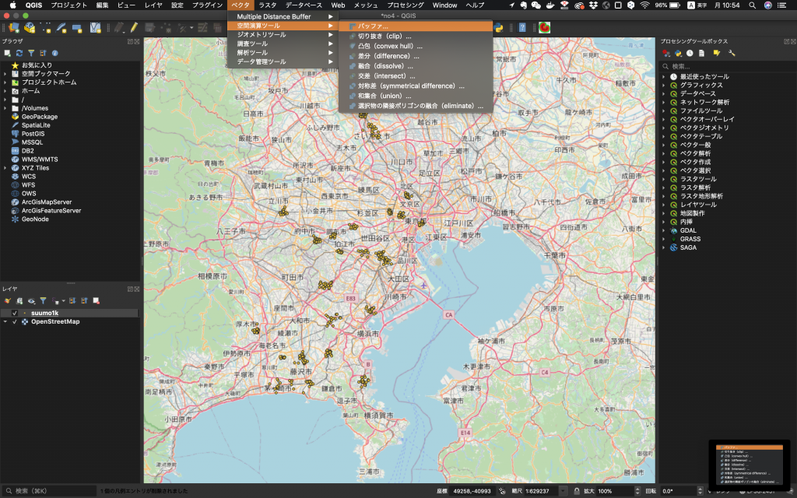</figure>
<p>(2) 距離を400m(だいたい徒歩速度80m/分で5分歩いたことを想定しています)に設定します。保存先は「出力レイヤ」の「…」から作業フォルダを選び、「walkablearea.shp」として保存します。</p>
<figure class="wp-block-image size-large">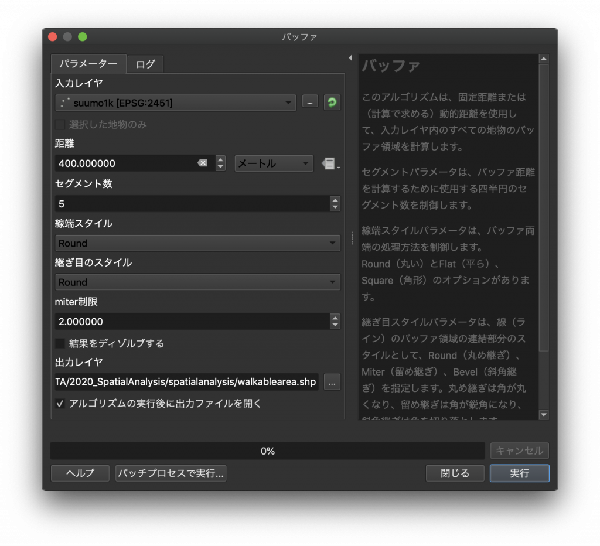</figure>
<p>(3)こんなになっていればOKです。</p>
<figure class="wp-block-image size-large">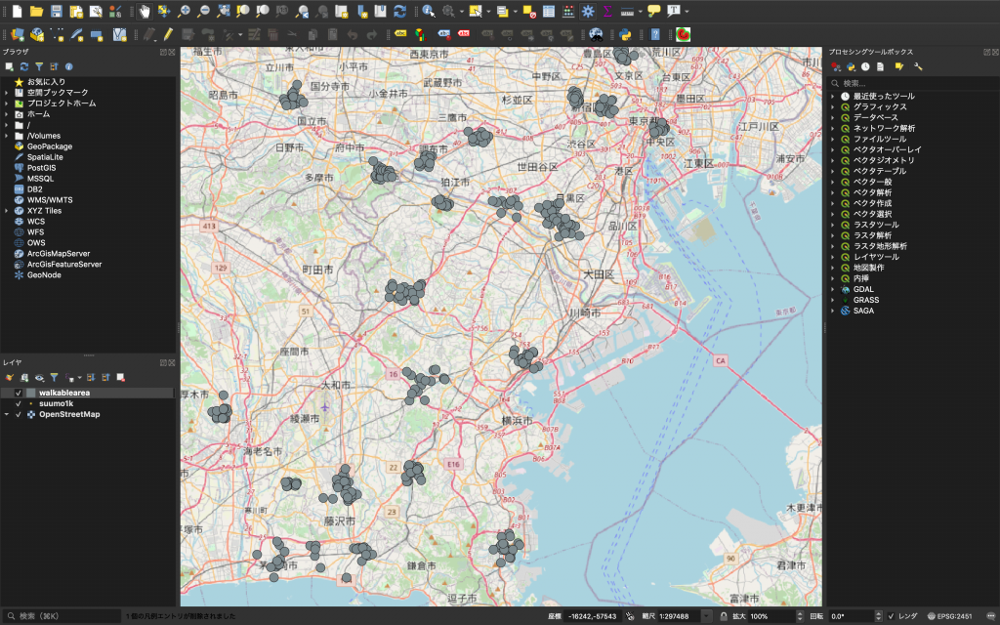</figure>
<h5 class="wp-block-heading">4. 衛星画像データを表示　&nbsp;</h5>
<p>広瀬先生の授業で学んだ<strong>衛星画像</strong>を実際に扱ってみましょう。</p>
<p>(1) データソースマネージャを開き、左側のメニューからブラウザを選びます。先ほどダウンロードしたデータを保存した場所から「LC08_L1TP_107035_20181001_20181010_01_T1_B4.tiff」「LC08_L1TP_107035_20181001_20181010_01_T1_B5.tiff」をダブルクリックして追加します。</p>
<p>(2) 下図のように表示されていればOKです。</p>
<figure class="wp-block-image size-large">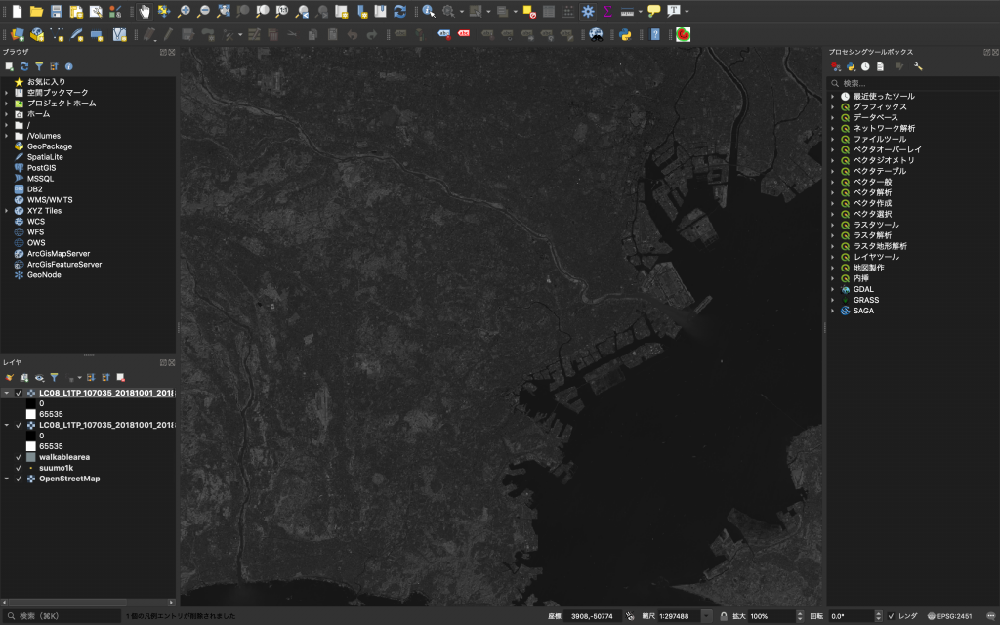</figure>
<p>(3) しかし、見づらいので表示を消しておきます。</p>
<figure class="wp-block-image size-large">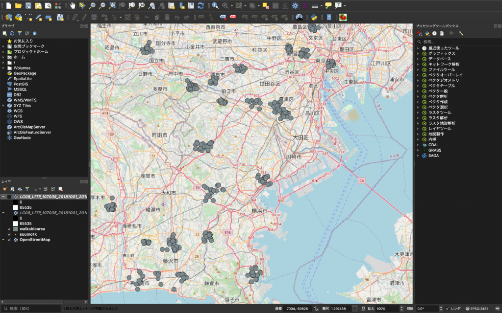</figure>
<h5 class="wp-block-heading">5. NDVIによる緑被地の抽出　&nbsp;</h5>
<p>NDVIとか小難しい名前が出てきましたが、心配する必要はありません。NDVI(Normalized Differential Vegetation Index: 正規化植生指標)という指標で、平たく言えば衛星画像の「色」から木や草を抽出しよう、というものです。　では衛星画像の「色」とはなんでしょうか。</p>
<p>そのためには衛星画像と航空写真の違いを知るところから始めると、わかりやすいでしょう。衛星画像は、光学センサーを用いて撮影されています。光学センサーは光を波長ごとに感知でき、赤色の波長、緑色の波長、非可視光の近赤外線など波長ごとに別々の画像として保存されます。</p>
<figure class="wp-block-image"><figcaption class="wp-element-caption">https://note.com/kinari_iro/n/nfc6ee22bcd11　より</figcaption></figure>
<p>一方で、航空写真の多くは皆さんの持つような一眼レフやiphoneと仕組みは同じです。その場合、RGBで記録され、波長ごとに画像を分けることはできません。</p>
<p>そしてNDVIはこの波長の差を使います。どういうことか、ご説明しましょう。植生指標とは、植物の元気さ(活性)を表す指標です。元気な植物はどんどん光合成をしますから、光合成に使う赤の波長をより多く吸収しているはずです。 一方で、近赤外領域の波長は吸収できずに反射してしまいます。 つまり、植物に吸収されてしまった以上、衛星画像では赤の波長が近赤外線より少なくなっていると考えられます。そこで、次のような式を考えます。</p>
<p>(近赤外線)-(可視光(赤))</p>
<p>そもそも近赤外線は光合成にあまり影響がありません。そのため光合成をどんどん行っている元気な植物は、赤の波長域の反射強度が小さいはずなので、この計算結果の値は大きくなります。逆に光合成をしていないものは、赤の波長域の反射強度が大きいので、この計算結果は小さくなります。</p>
<p>これを正規化(-1から1の値をとるように調整)すると、</p>
<p>{(近赤外線)-(可視光(赤))}/{(近赤外線)+(可視光(赤))}</p>
<p>とできます。これがNDVIの算出方法です。</p>
<h5 class="wp-block-heading">5.1 NDVIの計算</h5>
<p>(1) メニューバーから「ラスタ」→「ラスタ計算機」を選びます。</p>
<figure class="wp-block-image size-large">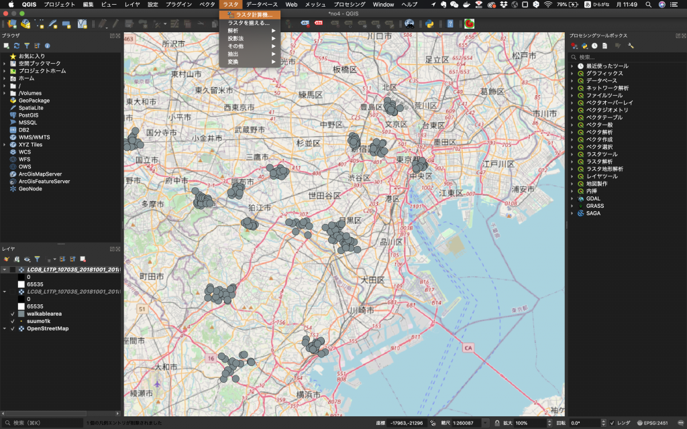</figure>
<p>(2) 「ラスタ計算機」の画面が表示されたら、まず保存先をいつもの場所にします(ファイル名はndvi、出力形式はGeoTIFFにしています)。保存に関する設定が終わったら、AとBを使って、NDVIの式を入力します。全部入力が終わったら右下のOKをクリックします。</p>
<figure class="wp-block-image size-large">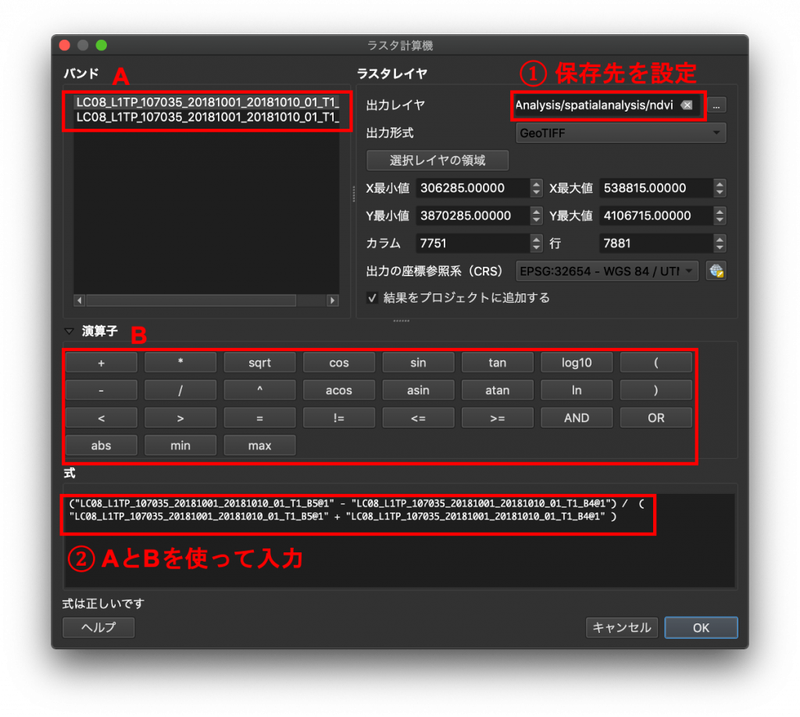</figure>
<p>(3) このように表示されたでしょうか。</p>
<figure class="wp-block-image size-large">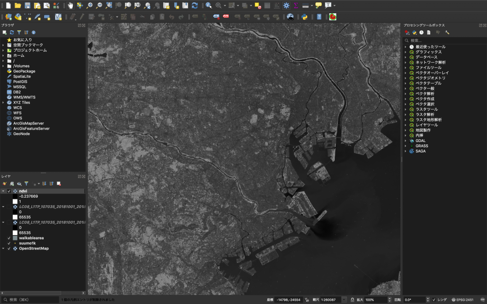</figure>
<h5 class="wp-block-heading">5.2 NDVIの再分類と緑被率の算出</h5>
<p>今から緑被率を計算します。</p>
<p>(1) メニューバーから「プロセシング」→「ツールボックス」を選択すると画面右に「プロセシングツールボックス」が開きます。</p>
<p>(2) そして検索ウインドウに再分類を意味する「reclass」と入力してみましょう。そうすると、下に出てきた「ラスタ解析」→「テーブルによる再分類」をクリックします。</p>
<figure class="wp-block-image size-large">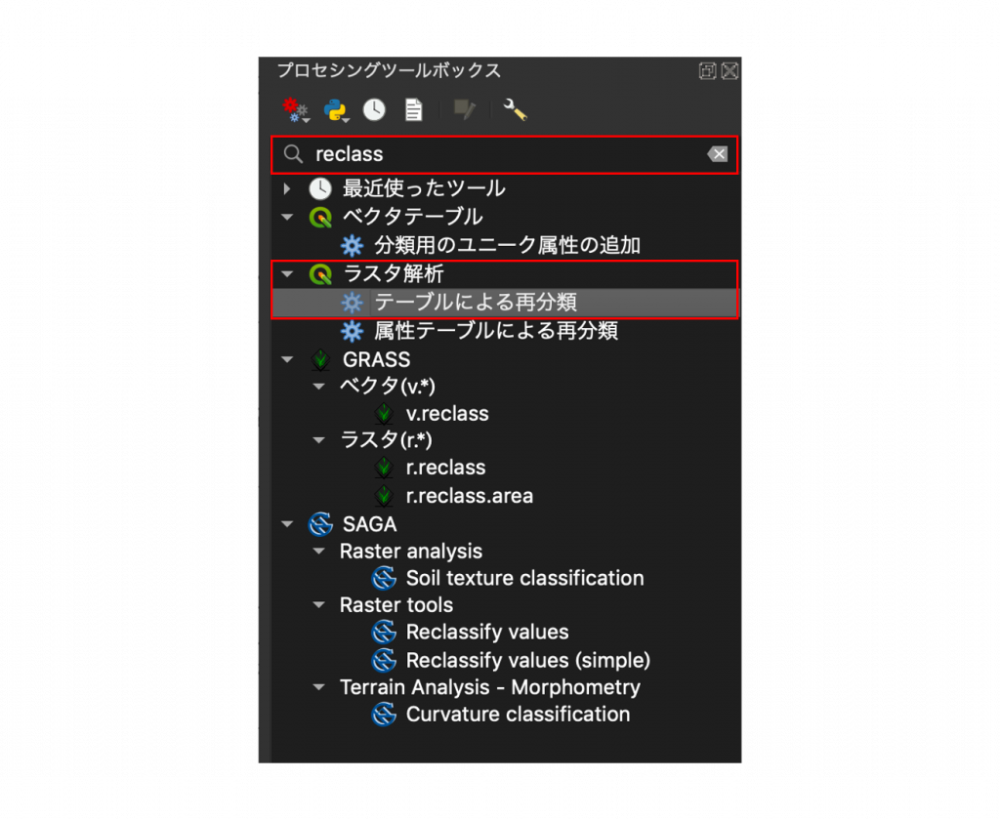</figure>
<p>(3) テーブルによる再分類が開いたら、再分類の区分表を下図の通り設定します。なぜボーダーを0.2にするか、という質問があるかと思いますが、下記既往研究に基づいています。このボーダーを設定し、1と0に分類することで、緑があるのか、ないのか明らかにします。出力ラスタは、ファイルの保存場所を選び、「re_ndvi.tif」という名前で保存します。以上の設定が終わったら、右下の実行をクリックします。</p>
<figure class="wp-block-image size-large">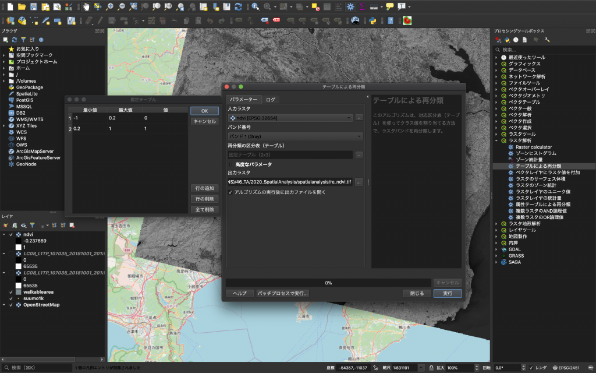</figure>
<figure class="wp-block-image"><figcaption class="wp-element-caption">Taufik, Afirah et al. “Classification of Landsat 8 Satellite Data Using NDVI Tresholds.”&nbsp;<em>Journal of Telecommunication, Electronic and Computer Engineering</em>&nbsp;8 (2016): 37-40.</figcaption></figure>
<p>(4) このように表示されましたか？</p>
<figure class="wp-block-image size-large">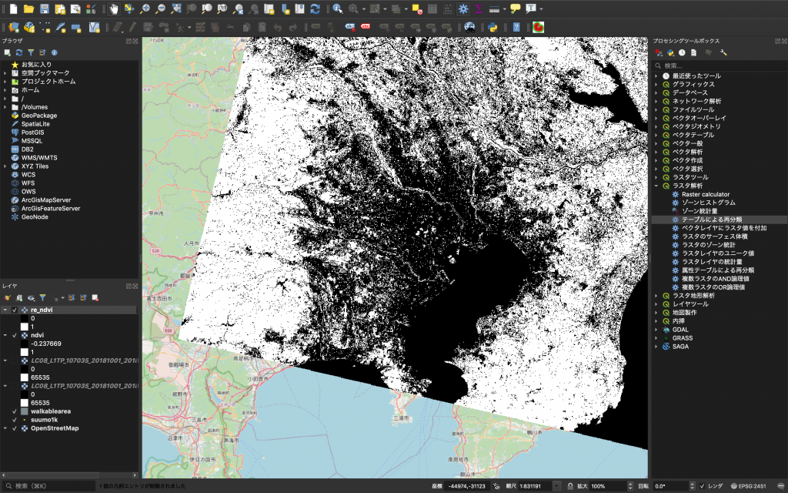</figure>
<p>(5) 勘がいい人は気づいたかもしれませんが、演習3と同じ作業です。</p>
<p>ここからは、各物件の徒歩圏内の緑被率を計算します。</p>
<p>(6) メニューバーから「プロセシング」→「ツールボックス」を選びます。</p>
<p>(7) 画面右に出てきた「プロセシングツールボックス」から「ラスタ解析」→「ゾーンヒストグラム」を開きます。</p>
<p>(8) 入力ラスタで「re_ndvi」、ゾーンのベクタレイヤで「walkablearea」をそれぞれ選びます。次に、出力レイヤの欄でファイルの保存場所と保存名を選びましょう。このデモでは、「spatialanalysis」のフォルダの下に「result.shp」という名前で保存しています。全て設定し終えたら、右下の実行ボタンをクリックしましょう。そして実行が終わったら、「閉じる」をクリックします。</p>
<figure class="wp-block-image size-large">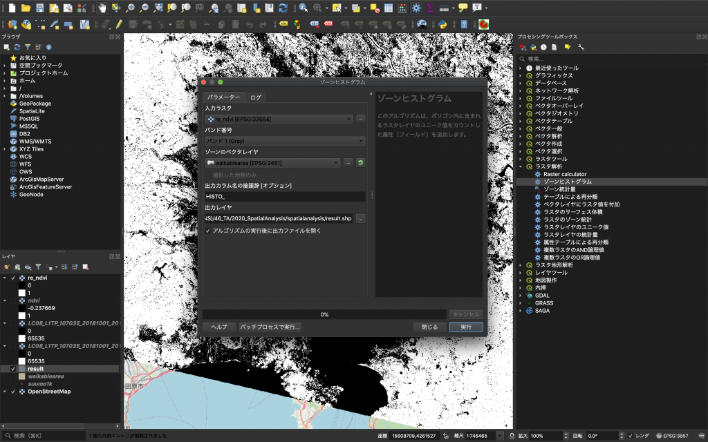</figure>
<p>(9) できたresultの属性テーブルを開いてこうなっていればOKです。</p>
<figure class="wp-block-image size-large">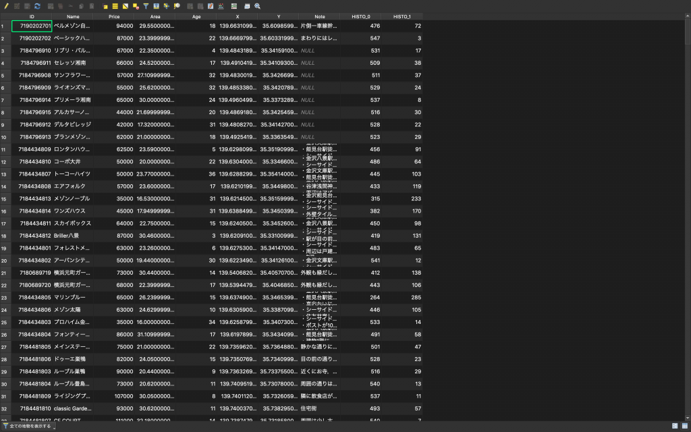</figure>
<h5 class="wp-block-heading">5.3 各マンション毎の集計</h5>
<p>(1) 属性テーブルを書き出します。レイヤプロパティからresultを右クリックし、「エクスポート」→「地物の保存」と進みます。「ベクタレイヤを名前をつけて保存」ウインドウが開いたら形式を「カンマで区切られた値[CSV]」を選択し、ファイル名でresult.shpと同じ場所にresult.csvとして保存します。このあとexcelで開くので、エンコーディングはShift_JISにしておきます。また、このデータはQGISで必要ないので、一番下の「保存されたファイルを地図に追加する」というチェックボックスは外して構いません。以上完了したら、右下の「OK」をクリックします。</p>
<figure class="wp-block-image size-large">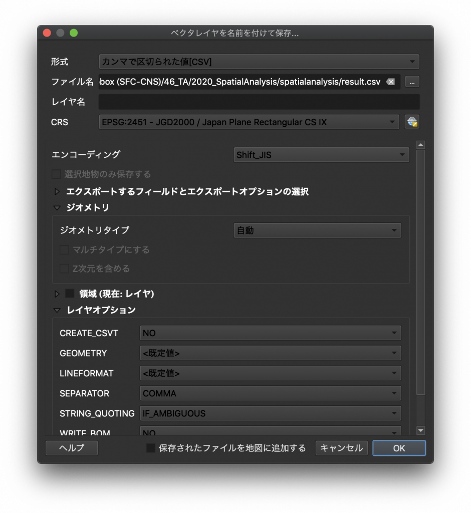</figure>
<p>(2) Excelでcsvを開きます。K列で緑被率を計算しましょう。「=J2/(I2+J2)」と入力し、下も同様に計算します。</p>
<figure class="wp-block-image size-large">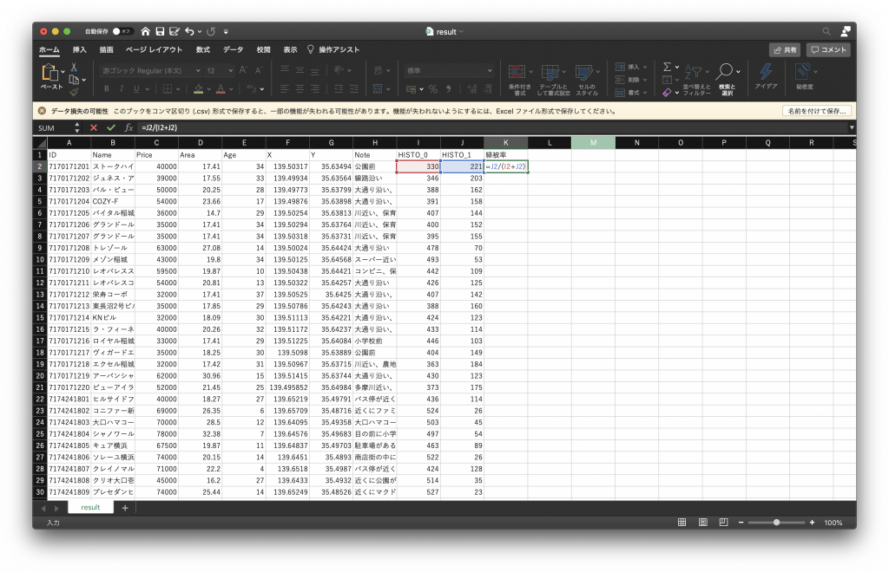</figure>
<p>(3) ここまでできたらこのファイルを課題として登録しましょう。しっかり保存しておきましょう。お疲れ様でした。</p>
<p>2020.11.11 QGIS版 初版（政策・メディア研究科 博士課程 1年 中山俊）</p>
      </div>
      <div class="page-nav">
        <a href="演習3-空間検索を使ってみる.html">← 演習3 空間検索を使ってみる</a><a href="演習5-空間分布の表示.html">演習5 空間分布の表示 →</a>
      </div>
    </article>
  </main>
</div>

<footer class="site-footer">
  <div class="container">
    <p class="site-info">&copy; 2026 Shun Nakayama</p>
  </div>
</footer>

</body>
</html>